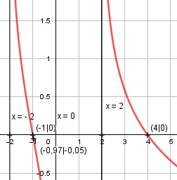

Aufgabe 167 3 * x f(x) = ln (--------) x2 - 4 Ketten- und Quotientenregel erste Ableitung: u = 3 * x, u' = 3 v = x2 - 4, v' = 2x 3 * (x2 - 4) - 2x * 3x -3x2 - 12 g'(x) = ------------------------ = ----------- (x2 - 4)2 (x2 -4)2 -3x2 - 12 ----------- (x2 - 4)2 -3 * (x2 + 4) f'(x) = ----------- = ------------------ 3 * x 3 * x * (x2 - 4) -------- x2 - 4 x2 + 4 f'(x) = - --------- x3 - 4x Quotientenregel zweite Ableitung: u = -(x2 + 4), u' = -2x v = x3 - 4x, v' = 3x2 - 4 -2x*(x3 - 4x) - (3x2 - 4)*(- (x2 + 4)) f''(x) = -------------------------------------- (x3 - 4x)2 -2x4 + 8x2 + 3x4 + 8x2 - 16 f''(x) = ----------------------------- (x3 - 4)2 x4 + 16x2 - 16 f''(x) = ---------------- (x3 - 4x)2 Zur Beurteilung, ob f'''(x) ≠ 0: (Begründung siehe Aufgabe 105) u = x4 + 16x2 - 16, u' = 4x3 + 32x u' 4x3 + 32x f'''(x) = --- = ------------ v (x2 - 4)2 ≠ 0 für alle x ≠ 0, 2, -2 3 * x -------- muss wegen ln > 0 sein. x2 - 4 3 * x -------- > 0, wenn 3x > 0 und x2 – 4 > 0 x2 - 4 3x > 0 |:3 x > 0 x2 - 4 > 0 |+4 x2 > 4 |√ |x| > 2 für x > 2 oder x < 2 L1 = 2 < x < ∞ oder 3x < 0 und x2 – 4 < 0 3x < 0 |:3 x < 0 x2 - 4 < 0 |+4 x2 < 4 |√ |x| < 2 für -2 < x < 2 L2 = -2 < x < 0 Definitionsbereich: -2 < x < 0, 2 < x < ∞ Polstelle: x2 - 4 = 0 |+4 x2 = 4 |√ |x| = 2 3x Für x --> ± 2 geht ln -------- --> ∞ x2 - 4 3x Für x --> 0 geht ln -------- --> -∞ x2 - 4 Wertebereich: -∞ < f(x) < ∞ Symmetrie zur y-Achse bzw. zum Punkt (0|0): 3 * (-x) -3x f(-x) = ln (----------) = ln -------- ≠ f(x) (-x)2 - 4 x2 - 4 --> keine Achsensymmetrie -3x -f(-x) = - ln -------- ≠ f(x) x2 - 4 --> keine Punktsymmetrie> Nullstellen: f(x) = 0 3x ln (--------) = 0 x2 - 4 3x ------- = e0 = 1 |*(x2 - 4) x2 - 4 3x = x2 - 4 |-3x x2 - 3x - 4 = 0 p, q – Formel p = -3, q = -4 x1,2 = x1,2 = 1,5 ± x1,2 = 1,5 ± x1,2 = 1,5 ± 2,5 x1 = 4 x2 = -1 N1(4|0), N2(-1|0) Schnittpunkt mit der y-Achse: x = 0 x = 0 liegt nicht im Definitionsbereich --> kein Schnittpunkt Extrempunkte: f'(x) = 0 x2 + 4 - --------- = 0 |*(x3 - 4x) x3 - 4x -x2 - 4 = 0 |+x2 x2 = -4 |ⱱ --> keine Lösung --> keine Extrempunkte Wendepunkte: f''(x) = 0 x4 + 16x2 - 16 ---------------- = 0 |*(x3 -4x) (x3 - 4x)2 x4 + 16x2 - 16 = 0 Substitution: x2 = z z2 + 16z - 16 = 0 p, q – Formel p = 16 q = -16 z1,2 = z1,2 = -8 ± z1,2 = -8 ± z1,2 = -8 ± 8,94 z1 = 0,94 z2 = -16,94 Rücksubstitution: x1,2 = √0,94 = ± 0,97 x1 = 0,97 --> keine Lösung, liegt außerhalb des Definitionsbereiches x2 = -0,97 3 * (-0,97) f(0,97) = ln (-------------) = -0,05 (-0,97)2 - 4 WP(-0,97|-0,05) Graph:
